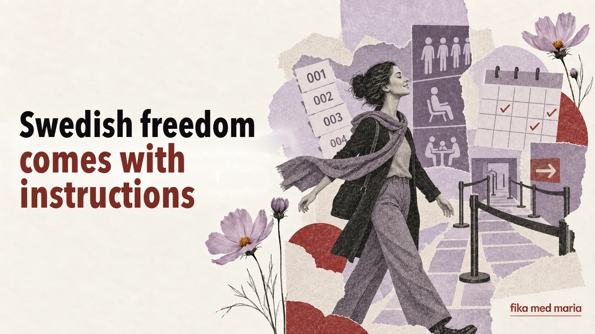

Swedish freedom comes with instructions: why a country of individualists loves rules so much

Sweden is often described as a country of personal freedom. It isn’t customary here to interfere too much in other people’s lives, adults make their own choices, and children are given a say from an early age.
And yet the laundry room has a booking calendar, queues work with numbered tickets, meetings have to be arranged in advance, and a detailed sorting chart hangs next to the recycling bin.
This isn’t a contradiction. Swedish freedom often follows the formula frihet under ansvar – freedom with responsibility.
Free, as long as it doesn’t shift the consequences onto others
You can organise your working day in your own way – as long as you stick to what’s been agreed. You can spend time in nature – as long as you treat the place with care. You can use the shared laundry room – as long as you don’t take someone else’s time slot and you leave it clean.
The line doesn’t run between “allowed” and “not allowed”, but between your own freedom and the inconvenience that others would have to pay for.
That’s why you often hear these words in Swedish:
- visa hänsyn – to show consideration for others;
- ta ansvar – to take responsibility;
- följa reglerna – to follow the rules;
- respektera tiden – to respect time;
- gemensamt ansvar – shared responsibility.
Man gör inte så
The Swedish pronoun man lets you talk about a social norm without blaming anyone directly.
Man kommer inte oanmäld.
It isn’t the done thing to turn up unannounced.
Man tar inte den sista biten utan att fråga.
You don’t take the last piece without asking.
Så gör man inte.
That’s not how it’s done.
The phrase doesn’t name a specific culprit, but it clearly marks the boundary of acceptable behaviour.
Så brukar vi göra
When a Swede says Så brukar vi göra här – “This is how we usually do it here” – it can sound like a neutral description. In reality, it often carries an invitation to fall in with the established way of doing things.
At work, this isn’t always an outright ban on doing things differently. You can ask:
Finns det någon särskild anledning till att ni gör så?
Is there a particular reason why you do it this way?
That way you’re not rejecting the norm, but finding out the logic behind it.
Rules as a way of avoiding personal power
When there’s a transparent queue, a numbered ticket or a booking system, the decision depends less on who makes the loudest demands, who knows the staff best or who is good at arranging things informally.
Rules can be annoying because there are so many of them, but at the same time they promise predictability: one procedure for everyone.
Of course, real life doesn’t always live up to the ideal. But it is precisely the fact that the rules are the same for everyone that explains why jumping the queue or taking someone else’s booked slot provokes a strong reaction.
How to react if you didn’t know the rule
The defensive reply Men jag visste inte! explains the situation, but doesn’t always put it right. It’s better to add that you’re willing to do things differently:
Jag visste faktiskt inte det. Tack för att du säger till — då gör jag så nästa gång.
I really didn’t know that. Thank you for telling me – next time I’ll do it that way.
If a rule seems illogical:
Jag vill gärna förstå. Kan du förklara hur det fungerar?
A neighbour explains a recycling rule you didn’t know about. Which reply will help you settle the matter calmly?
- Det är inte mitt problem.
- Ingen har sagt det till mig, så jag tänker inte göra så.
- Okej, jag visste inte det. Då sorterar jag så nästa gång.
Show answer
Correct answer: 3.
It helps you understand what expectations lie behind a brief remark, an instruction or a message from your neighbours. In Fika med Maria lessons, we learn how to handle situations like these, not just how to translate words. Practical courses.
What does visa hänsyn mean?
To show consideration for others and behave in a way that doesn’t cause them unnecessary inconvenience.
Can you question the rules?
Yes. It’s usually more productive to start by finding out what the rule is for, and then calmly suggest an alternative.